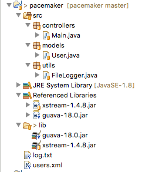
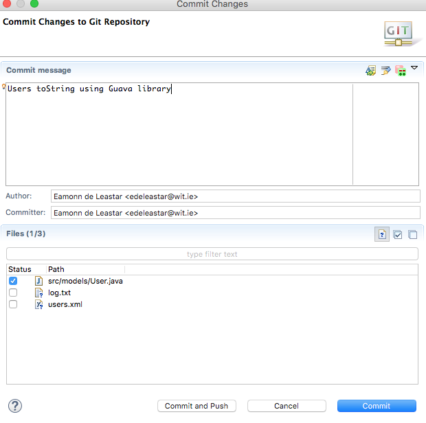
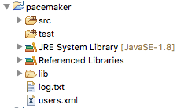
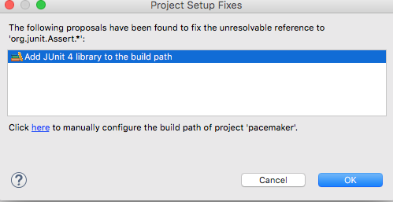

Objectives
Evolve the application developed in lab01 with additional capabilities
Setup
You should have a project from lab01 looking something like this:

This is an archive of the project if you dont have it completed:
Make sure you can import the application into eclipse and run it
Guava Library
Download the latest version of this library here:
The jar file is available here:
Download the guava-18.0.jar file featured prominently in the above. Drag and drop the file to the lib file of your pacemaker project and add it to the build path. Your project should look like this:

PacemakerAPI
In the controllers package, create new class called "PacemakerAPI", containing the following:
package controllers;
import java.util.ArrayList;
import java.util.List;
import models.User;
public class PacemakerAPI
{
private List <User> users = new ArrayList<User>();
public List<User> getUsers ()
{
return users;
}
public void deleteUsers()
{
users.clear();
}
public User createUser(String firstName, String lastName, String email, String password)
{
User user = new User (firstName, lastName, email, password);
users.add(user);
return user;
}
public User getUser(String email)
{
for (User user : users)
{
if (email.equals(user.email))
return user;
}
return null;
}
public void deleteUser(String email)
{
User foundUser = null;
for (User user : users)
{
if (email.equals(user.email))
foundUser = user;
}
if (foundUser != null)
{
users.remove(foundUser);
}
}
}Read this class carefully - making sure you understand each method.
Replace your current main class with the following:
package controllers;
import java.io.IOException;
import java.util.List;
import models.User;
public class Main
{
public static void main(String[] args) throws IOException
{
PacemakerAPI pacemakerAPI = new PacemakerAPI();
pacemakerAPI.createUser("Bart", "Simpson", "bart@simpson.com", "secret");
pacemakerAPI.createUser("Homer", "Simpson", "homer@simpson.com", "secret");
pacemakerAPI.createUser("Lisa", "Simpson", "lisa@simpson.com", "secret");
List<User> users = pacemakerAPI.getUsers();
System.out.println(users);
}
}Run the application now - the output on the console should be something like this:
[models.User@15db9742, models.User@6d06d69c, models.User@7852e922]toString
The console display of the User objects, which appear as some sort of memory address. We can fix this my introducing a 'toString' method into the User class:
public String toString()
{
return firstName + ' ' + lastName +' ' + email +' ' + password;
}Run the app again, and verify that you can see the actual user details.
[Bart Simpson bart@simpson.com secret, Homer Simpson bart@simpson.com secret, Lisa Simpson bart@simpson.com secret]The Guava libraries we imported:
contains some useful utilities for building toString. Introduce the following import into the top of the User class:
import static com.google.common.base.MoreObjects.toStringHelper;and rewrite toString as follows:
public String toString()
{
return toStringHelper(this).addValue(firstName)
.addValue(lastName)
.addValue(password)
.addValue(email)
.toString();
}The above fragment will require this import:
import static com.google.common.base.MoreObjects.toStringHelper;Run the app again, and note the slightly changed representation of the Users.
[User{Bart, Simpson, secret, bart@simpson.com}, User{Homer, Simpson, secret, bart@simpson.com}, User{Lisa, Simpson, secret, bart@simpson.com}]We should commit this version now before making any more changes. Right click on the project in Package Explore, select Team->Commit - and fill out the form - and the commit:

Then select Push to upstream from the Team menu to upload your changes to github. Make that the github repo contains the new additions (by browsing on github to the source code).
Dont proceed to the next step until you have verified that the git push is operating correctly.
Upgrade PacemakerAPI
PacemakerAPI currently uses a List data structure. It might make sense to rework this to use a Map - keyed on the email address.
First, redefine the users collection in PacemakerAPI to be a map:
private Map<String, User> users = new HashMap<String, User>();(import the libraries in the usual way)
This will require some changes to the api itself:
- getUsers will return a collection, not a list, of the user in the map:
public Collection<User> getUsers ()
{
return users.values();
}- putting a user into the collection will be different:
public User createUser(String firstName, String lastName, String email, String password)
{
User user = new User (firstName, lastName, email, password);
users.put(email, user);
return user;
}- searching for a user, though, becomes simpler:
public User getUser(String email)
{
return users.get(email);
}- as does deleteUser:
public void deleteUser(String email)
{
users.remove(email);
}There will be an error in Main when these changes are introduced (see if you can fix it). Verify that the app works as expected.
Commit these changes with a suitable commit message.
The creation of the Map is a little verbose:
private Map<String, User> users = new HashMap<String, User>();Java 7 simplifies this with a new syntax:
private Map<String, User> users = new HashMap<>();Eliminating the repetition of the type parameters.
If we are using maps - it is recommended that the hash functions used be associated with the actual (preferably unique) values in the object to be inserted into the container.
We should also strengthen the hash associated with the User class, as we are now storing it in a Map. The Guava libraries we have imported provide some guidance and support:
and we can refactor User to use its hash functions. First, import the requisite class:
import com.google.common.base.Objects;...and then implement the hash function to use our objects attributes:
@Override
public int hashCode()
{
return Objects.hashCode(this.lastName, this.firstName, this.email, this.password);
}Note the user of the 'Override' attribute - discussed here:
We should also add override to toString:
@Override
public String toString()
{
return toStringHelper(this).addValue(firstName)
.addValue(lastName)
.addValue(password)
.addValue(email)
.toString();
}The Main class will no longer be compiling - the call to getUsers now returns a Collection instead of a List:
Collection<User> users = pacemakerAPI.getUsers();When everything is compiling and running correctly, commit all changes with a suitable message and push to github.
IDs
We might wish to use IDs in addition to emails when referencing out users. The User class can be extended to include these attributes:
public class User
{
static Long counter = 0l;
public Long id;
//...
public User(String firstName, String lastName, String email, String password)
{
this.id = counter++;
//...
}We can think think of the principal users collection as the userIndex, and introduce a separate collection call emailIndex - which stores the same object against a different key for rapid access:
public class PacemakerAPI
{
private Map<Long, User> userIndex = new HashMap<>();
private Map<String, User> emailIndex = new HashMap<>();
public Collection<User> getUsers ()
{
return userIndex.values();
}
public void deleteUsers()
{
userIndex.clear();
emailIndex.clear();
}
public User createUser(String firstName, String lastName, String email, String password)
{
User user = new User (firstName, lastName, email, password);
userIndex.put(user.id, user);
emailIndex.put(email, user);
return user;
}
public User getUserByEmail(String email)
{
return emailIndex.get(email);
}
public User getUser(Long id)
{
return userIndex.get(id);
}
public void deleteUser(Long id)
{
User user = userIndex.remove(id);
emailIndex.remove(user.email);
}
}Review the above code - note getUser and deleteUser have been adjusted to use IDs.
Main can be reworked to use the above API - testing the delete method in the process:
PacemakerAPI pacemakerAPI = new PacemakerAPI();
pacemakerAPI.createUser("Bart", "Simpson", "bart@simpson.com", "secret");
pacemakerAPI.createUser("Homer", "Simpson", "homer@simpson.com", "secret");
pacemakerAPI.createUser("Lisa", "Simpson", " lisa@simpson.com", "secret");
Collection<User> users = pacemakerAPI.getUsers();
System.out.println(users);
User homer = pacemakerAPI.getUserByEmail("homer@simpson.com");
System.out.println(homer);
pacemakerAPI.deleteUser(homer.id);
users = pacemakerAPI.getUsers();
System.out.println(users);When everything is compiling and running correctly, commit all changes with a suitable message and push to github.
User Tests
Create a new 'Source Folder in your project called test:

package models;
import static org.junit.Assert.*;
import java.util.HashSet;
import java.util.Set;
import org.junit.Test;
import static models.Fixtures.users;
public class UserTest
{
User homer = new User ("homer", "simpson", "homer@simpson.com", "secret");
@Test
public void testCreate()
{
assertEquals ("homer", homer.firstName);
assertEquals ("simpson", homer.lastName);
assertEquals ("homer@simpson.com", homer.email);
assertEquals ("secret", homer.password);
}
@Test
public void testIds()
{
Set<Long> ids = new HashSet<>();
for (User user : users)
{
ids.add(user.id);
}
assertEquals (users.length, ids.size());
}
@Test
public void testToString()
{
assertEquals ("User{" + homer.id + ", homer, simpson, secret, homer@simpson.com}", homer.toString());
}
}When you bring in this class, it will not compile due to missing libraries. Figure out how to add these now one way or another. Eclipse might prompt with this auto-fixup dialog:

It will still not compile - as we are missing the fixtures:
package models;
public class Fixtures
{
public static User[] users =
{
new User ("marge", "simpson", "marge@simpson.com", "secret"),
new User ("lisa", "simpson", "lisa@simpson.com", "secret"),
new User ("bart", "simpson", "bart@simpson.com", "secret"),
new User ("maggie","simpson", "maggie@simpson.com", "secret")
};
}The tests should run now - but one of them is failing. Can you fix it?